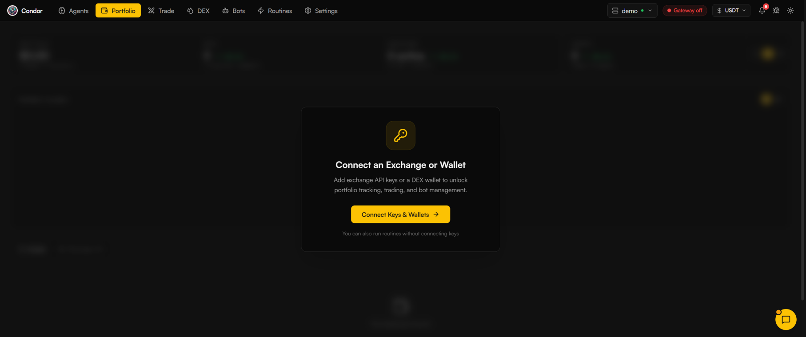
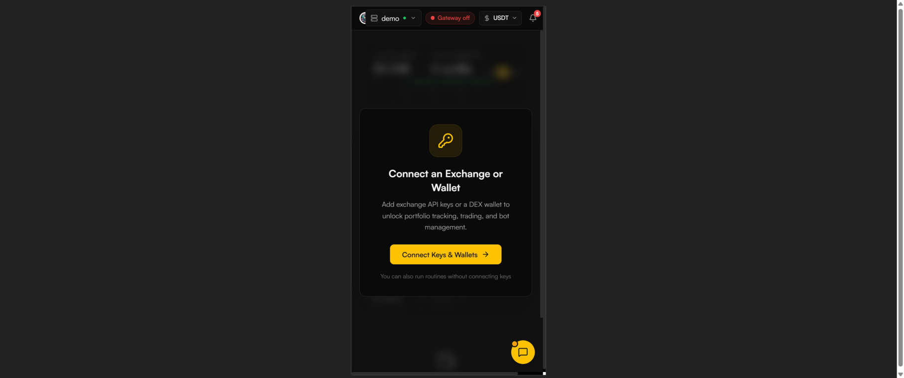
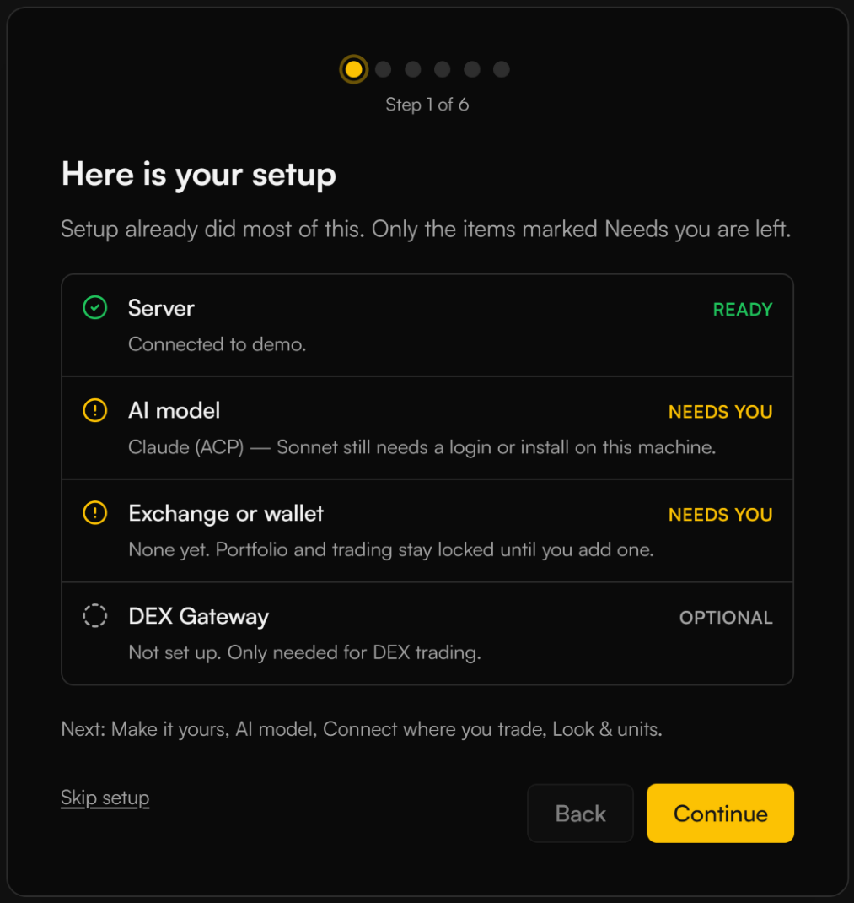
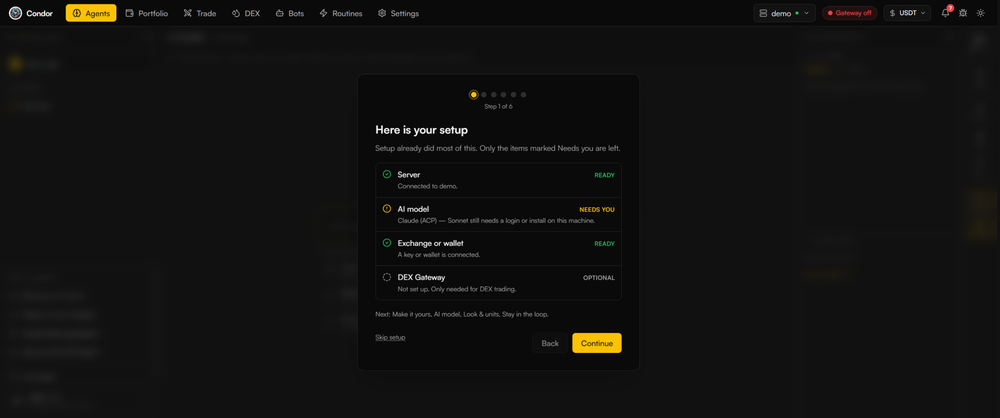
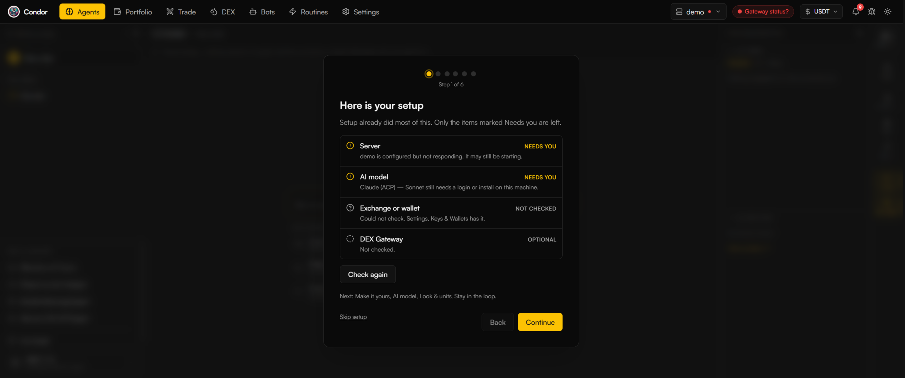
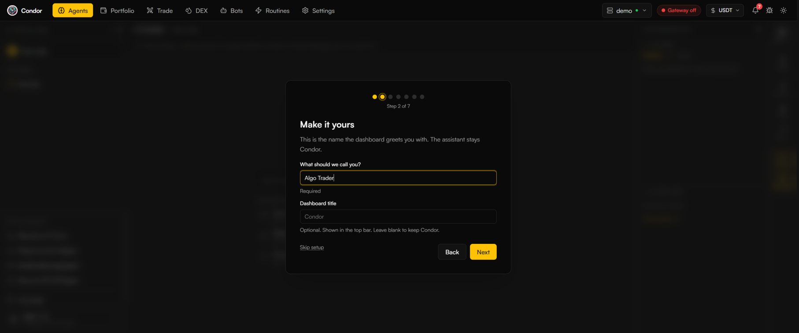
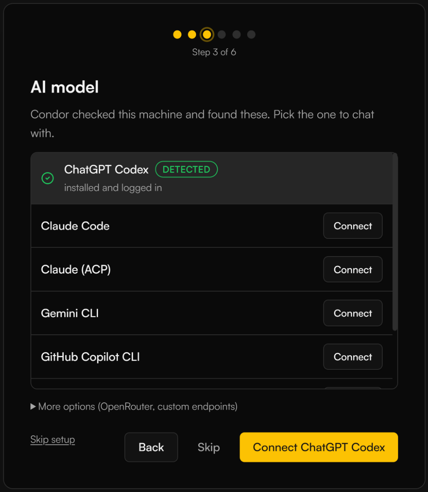
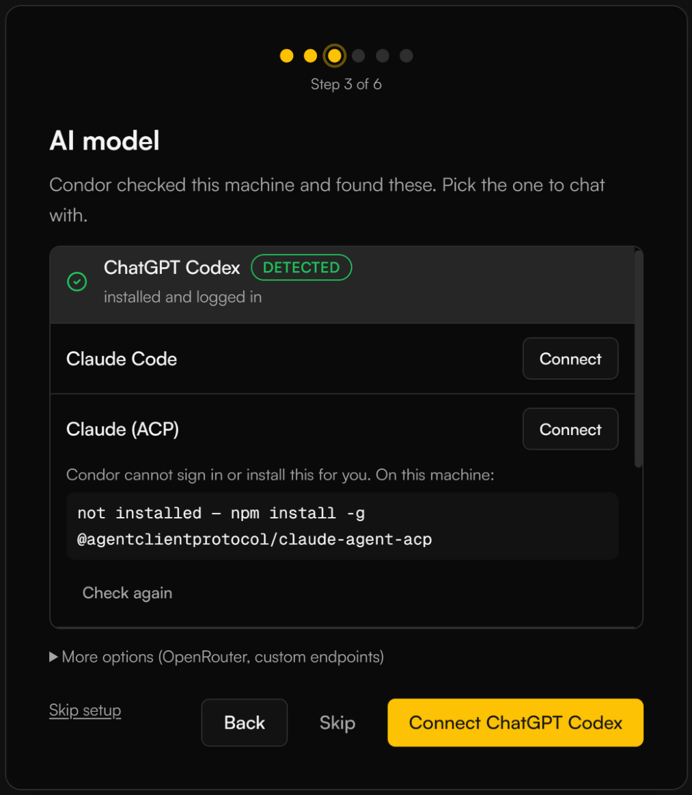
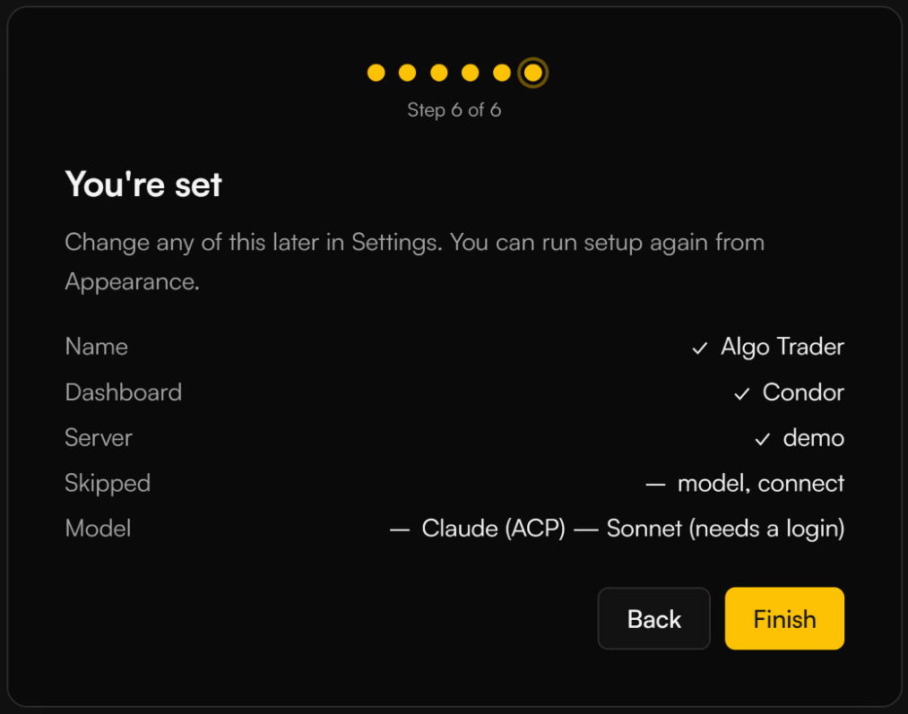
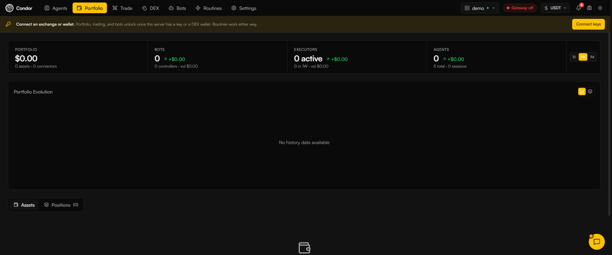

Guided first-run onboarding
Replace the blocking "Connect an Exchange or Wallet" overlay with a short, skippable setup that greets traders by name, confirms what make setup already configured, and leaves a gentle reminder instead of a wall. The look stays the same. Only the workflow changes.
Why
A new Condor install opens on a wall: a modal that blocks Portfolio, Trade, DEX and Bots until an API key exists. The first thing a trader learns is what they cannot do yet. A short guided setup flips that. It confirms what setup already did, asks only for what Condor needs, lets people skip what they are not ready for, and lands them in a dashboard that already feels like theirs.
- Setup, not a tour. The wizard collects settings (name, model, keys, look) and never explains the interface. This follows the Nielsen Norman Group guidance that onboarding fits apps that need user information to start, and that push tutorials interrupt people.
- Short and visible. A readiness summary first, then four to six steps with progress dots; every step except the name is skippable.
- No dead end. Skipping leaves a one-line reminder on trading pages, not a modal.
Sources carried over from the first version of this proposal (not re-checked in this revision): NN/G: mobile app onboarding, NN/G: onboarding tutorials, Appcues: product adoption benchmarks, Userpilot: user onboarding, Pendo: Cin7, Growth Dives: Linear onboarding.
Before
On a fresh install, Portfolio, Trade, DEX and Bots show a modal that cannot be dismissed. Its only exit is a button to Settings, then API keys. It asks nothing about the trader: no name, model or theme.


After
A frosted wizard that starts with a readiness summary and then shows only the steps this install still needs (four to six dots). Name is required; everything else can be skipped. An install that already has keys, a wallet, a conversation or a bot is marked complete and never sees it. Run setup again lives in the avatar menu and in Settings, Appearance.
Server fallback (only when setup leaves no server)
Setup normally creates a server named local (localhost:8000) and asks for its API username and password, so most installs go straight to the readiness check. The saved server is not tested on save, so the wizard checks its status after.
Proposed behaviour
State of the local server | What the wizard shows |
|---|---|
| Online | Confirm only: "Connected to local · localhost:8000". No password asked. |
| Exists but offline | "Hummingbot API isn't responding yet", a Retry button, and host and port with an Edit link. Do not ask for credentials first. |
| Reachable but empty or rejected credentials | Ask only for username and password, save to the existing server, then re-check its status. |
| No servers | The full form (today's screen), pre-filled with local, localhost, 8000. |
Because saving never tests the connection, the wizard should save, then poll the server status and show the result. Telling "wrong password" from "unreachable" may need a small backend change (a test-connection call); that is not confirmed yet.
Wording per connection result
Backend calls (built by another lane in PRs #16 and #17, final names): POST /api/v1/settings/servers/{name}/test-connection checks the saved server with its stored credentials; POST /api/v1/settings/servers/test-connection with host, port, username and password checks values before saving. Both return {ok, status, message} and save nothing. GET /api/v1/servers/{name}/status now also returns checked_at, and a dead API reads as not online within about 15 seconds. Wording, one line each, never the server's own text:
| Status | Row detail | What the user can do |
|---|---|---|
online | Connected to name. | Nothing. Continue. |
not_configured (blank username or password, no network call) | name has no username or password saved yet. | Ask for username and password only, then save to the existing server. |
auth_error | The server answered but rejected the saved credentials. | Ask for username and password only. "Check again" after saving. |
unreachable or timeout (treated the same: on Windows a refused port reads as timeout) | name is not responding yet. It may still be starting. | "Check again". Show host and port with an Edit link, not a form. |
error | The server answered something unexpected. | "Check again", then Settings, Servers. |
Rules: never say "wrong password" unless the status is auth_error; never show the server's own error text; the form keeps what the user typed; show "last checked" from checked_at. After a dead API comes back, Connected can take up to about a minute to return, so "Check again" may need a second try. The frontend call waits until the rail PRs merge, because it adds one function to api.ts, a shared file.
Better: a readiness check, not a form
On a real install, the server step should not appear at all when the server is fine. Instead the wizard opens with a short checklist built from the actual state, and asks only for what is missing. Signals the dashboard can already read:
| Item | Detected from | If fine | If missing |
|---|---|---|---|
| Server | GET /servers and /servers/{name}/status | "Connected to local" (confirm) | The four states in the table above |
| Exchange keys | GET /settings/credentials?server= (empty list) | Show the connectors found | "Add an exchange key" → Settings, API Keys. Skippable |
| AI model | GET /sessions/options (ready, unverified or missing) | Name the ready model | "Chat needs a model" with the command or picker. Skippable |
| Gateway (DEX) | GET /settings/gateway/status | Hidden | Optional; only shown if the user opts into DEX |
Evidence from a clean install on the rn5 test machine (read-only inspection, no secrets): the install ended with server local online and accepted, no first-run preferences saved, no exchange key added by the user, Gateway not installed, and a model that was skipped in setup but still set as the default, so chat failed until a model was logged in. A wizard built on the signals above would have shown: server connected, keys to add, model needs setup.
Caveat: that install was driven by an agent, not typed by a person, so the credential prompts of a human first run were not observed. They are known only from reading setup-environment.sh.
Two nearby bugs found while checking
- "No server" flash. The top bar prints "No server" whenever the server list has not loaded yet, or the browser has no stored selection, and a fresh browser only picks the default after the first 10-second refresh. It should show a loading state until the list has loaded.
- Noisy Gateway poll. The dashboard asks for Gateway wallets about every 20 seconds and the server logs a full error each time when Gateway is not installed. It should check Gateway status first.
Your setup (new first step, always shown)
The wizard opens with a summary of what setup already did, read from the install, so nothing is asked twice. Only the items marked Needs you lead to a step. Prototype built on branch ui/onboarding-readiness (PR #14, stacked on #12), seen on the rn5 preview with a stand-in Hummingbot API.
The screenshots in this section show only the form (the app behind it is cropped out), at twice the pixel density, so the text reads at the size it has on screen.



- What the user is asked: name (always), AI model only if no model is ready, exchange or wallet only if none is connected, then look and units (a preference that cannot be detected). DEX Gateway is optional and never a step.
- The list freezes when the user presses Continue, so connecting a key mid-run does not remove a step under them.
- Checks never trap the user. A read still pending after 6 seconds shows "Not checked" and Continue works.
- The name step no longer repeats the server and model status line.
- Resume: reopening the wizard starts at the summary, which re-reads the install, instead of the last step.
Checked: types, lint, 43 unit tests (the logic that picks the steps), and the screens above. Not captured: the "everything ready" summary; that case is covered by a unit test only.
All step screenshots below show only the form, retaken from the current build on the rn5 preview (summary first, so a full run is 6 steps). A real run shows fewer dots when the install already has a model or a key. The "After skipping" screenshot keeps the page around it on purpose.
Make it yours (always)

AI model (only if no model is ready)
The step checks this machine and gives every provider a row. A provider it found carries a green Detected tag and what was found ("installed and logged in"). Found rows can be picked, the recommended one is preselected, and the primary button names the pick: Connect ChatGPT Codex. A provider it did not find has a Connect button that opens what to run on this machine, plus Check again. OpenRouter and custom endpoints open their own model lists, so they sit under More options. Skip leaves the chat quiet.


What it detects. Condor's backend already checks this machine for the Claude, Gemini, Copilot and Codex command-line tools (installed, and a login file where the tool keeps one), and for Ollama and LM Studio servers that answer. What Connect cannot do: log a command-line tool in or install it. Those are interactive steps on the machine, and the backend deliberately never drives them, so Connect on a provider that was not found tells the user what to run. A cloud key typed into the browser would need a new backend call, which is not part of this change.
Connect where you trade (only if nothing is connected)

Look and units

You're set

After skipping: a reminder, not a wall

Rollout
| PR | Branch | Scope | Review status |
|---|---|---|---|
| #2 | ui/onboarding-shell | Wizard shell, server gate, name step, You're set, keys reminder; removes the overlay | Built, works |
| #9 | ui/onboarding-connect | Connect where you trade step | Built, works |
| #11 | ui/onboarding-model | AI model step | Works, tweak below |
| #12 | ui/onboarding-look | Look and units (the Stay in the loop step it also built is removed in the follow-ups below) | Built, works |
| #14 | ui/onboarding-readiness | "Your setup" readiness summary first; only missing steps follow; name step drops the status line | Built, works |
| pending | ui/onboarding-no-alerts | Removes the Stay in the loop step (code, dots, tests) | Built, tested |
| pending | ui/onboarding-done-simple | You're set: removes the Deploy a bot and Browse agents cards | Built, tested |
| pending | ui/onboarding-model-detect | AI model step: every provider listed; Detected tag, per-row Connect, primary button names the pick (stacked on the row above) | Built, tested; see open point 1 |
| pending | ui/onboarding-model-connect | AI model step: found models first, each with Connect (superseded by the next row) | Built, tested; see open point 1 |
Stacked PRs, merge in order. Frontend only; the API and routes are unchanged. This proposal and the side-rail proposal both touch AppShell.tsx: merge the rail first, then rebase onboarding.
Open points from review
- Model step (#11). Addressed in the follow-up: detected providers first with a Detected tag, a Connect button on the rest, a primary button that names the pick. Still open: the backend reports one "usable" flag, so a tool that is installed but not logged in is also tagged Detected (its sentence says to log in once), and may be preselected over a logged-in one. Sending the three states it already computes (ready, unverified, missing) from
sessions.pywould let the screen tag only the ready ones, preselect them, and say "log in once" for the rest. - Server fallback. The current screen is a full form for the no-server case and ignores the
localserver that setup creates. Replace it with a readiness check that shows only what is missing (see "Better: a readiness check"), with the four server states as the fallback. Open: whether a test-connection call is added on the backend, how the wizard shows "starting" for a container that is still coming up, and whether the readiness check replaces steps 2 and 3 or sits in front of them. - Header noise. A red "Gateway" pill sits in the top bar behind the wizard on a fresh install. It is not actionable at that moment.
- Resume behaviour. Fixed in #14: reopening the wizard starts at the summary, which re-reads the install, instead of the last step.
Not checked yet: light theme and colour-blind mode inside the wizard, a real phone, and the wizard on an install that already has keys.
Decision requested
Approve the wizard (readiness summary, then four to six steps) and the non-blocking reminder, shipped as PRs #2, #9, #11, #12 and #14 into ui-redesign, subject to the open points above.
Refinement log
Newest first. Add a row for every change that comes out of review.
| Date | Change | Reason / source | PR |
|---|---|---|---|
| 2026-11-27 | Wizard screenshots now show only the form at twice the pixel density; removed the Stay in the loop step and its screenshot (dots 7 to 6); "You're set" no longer offers Deploy a bot or Browse agents; AI model step detects what the machine can run (Detected tag, per-row Connect, primary button names the pick); retook every step screenshot except "After skipping" | User review of the proposal. Code: ui/onboarding-no-alerts, ui/onboarding-done-simple, ui/onboarding-model-connect and ui/onboarding-model-detect (PR numbers pending). Telemetry consent is no longer asked in the wizard; the existing notice strip covers it after setup | pending |
| 2026-11-26 | Retook the AI model, connect, look, alerts and You're set screenshots from the PR #14 build so the dots count the summary step (steps 3 to 7 of 7) | Preview on rn5 on the readiness branch; the old shots read "of 6" | #13 |
| 2026-11-26 | Synced with the open PRs: added #14 to the rollout, refreshed the name-step screenshot and caption (summary first, title capped at 40 characters), marked resume as fixed, and noted that the other step screenshots predate the summary | Standing rule: the doc follows the real UI in the same step | #13 |
| 2026-11-26 | Decision: summary first, then only the missing steps. Built "Your setup" check (ui/onboarding-readiness), 43 unit tests, screenshots of three states; name step no longer repeats status; 6 s read deadline | Refinement session. Finding: Condor caches a server's online flag, so a server that just went down can read "Connected" until its cache refreshes (backend behaviour, not changed) | #14 |
| 2026-11-26 | Server check reworked: documented what a fresh make setup creates (local server, empty credentials the user fills in during setup) and proposed four states instead of one form | Refinement session; findings from setup-environment.sh and the Condor agent's read of the code. Not yet tested on a clean install | — |
| 2026-11-26 | Page rebuilt as editable HTML in docs/proposals/; screenshots retaken from the PR branches | Previous version was a generated page that could not be edited by every agent | docs |
| 2026-11-26 | Review notes added: model step list, server gate, header pill, resume behaviour | Review of PRs #2, #9, #11, #12 built on rn5 | — |